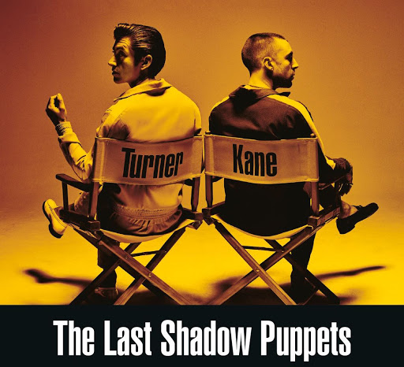

The Last Shadow Puppets(TLSP) are an English supergroup consisting of Alex Turner, Miles Kane, James Ford, and Zach Dawes.
They are joined live by Loren Humphrey (Guards, music producer, session musician) and Tyler Parkford (Mini Mansions).
The band released their debut album The Age of the Understatement in 2008. Following a lengthy hiatus, they returned,
releasing second album Everything You've Come to Expect in 2016.